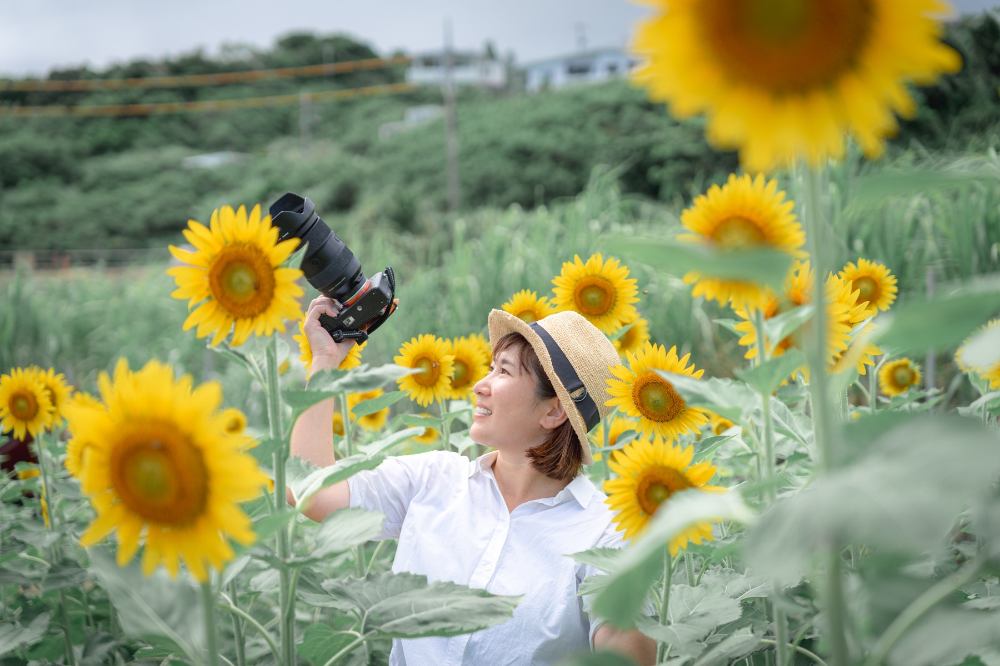

PHOTO
Location
ロケーション
¥10,000
沖縄の海や自然の中で、旅の空気も家族の表情も一緒に残します。
Photography for Gentle Tomorrows
自然な表情、空気感、そこにある温度まで残す写真撮影。家族写真、プロフィール、記念日、店舗撮影まで、想いに寄り添いながら撮影します。
Service
家族写真を中心に、屋外ロケーションからスタジオ撮影まで、記念日や成長の節目に合わせて撮影します。
Location
¥10,000
沖縄の海や自然の中で、旅の空気も家族の表情も一緒に残します。
Studio
¥10,000
お子さまの記念日や成長の節目を、落ち着いた空間で丁寧に撮影します。
Pet
¥10,000
大切な家族の一員であるペットとの自然な時間を、やさしく写真に残します。
Shichi-Go-San
¥10,000
受け継いだお着物や晴れの日の表情を、思い出に残る一日に整えます。
ペットと一緒の撮影や、掲載ジャンル以外のご相談もお気軽にお問い合わせください。
Profile

まっきー
写真は、思い出の入口。
その一枚から、笑い声や景色、その日の空気まで思い出せるよう
そんな撮影時間を大切にしています。
かけがえのない「今」を丁寧に写し、
やさしく未来へ残します。
Flow
希望日時・撮影内容をお知らせください。
イメージや不安な点を確認します。
自然な雰囲気を大切に撮影します。
セレクト・編集後、データで納品します。
Preparation Guide
沖縄の海は風が強い日が多いため、髪が乱れやすくなります。
ロングヘアの方は、まとめ髪やハーフアップがおすすめです。髪を下ろしたスタイルをご希望の場合は、ヘアスプレーやワックスで軽く固定していただくと安心です。
ご家族で服の色味を合わせていただくと、お写真に統一感が生まれます。
白・ベージュ・アイボリー・淡いブルーなど、自然になじむ色がおすすめです。
また、お揃いの帽子やスニーカーなど、さりげなくお揃いのアイテムを取り入れていただくのもおすすめです。
小さなお子さまは、撮影の合間におやつや水分補給をしながら進めると、最後まで笑顔で楽しんでいただけます。
小さなお子さまは、撮影の合間におやつや水分補給をしながら進めると、最後まで笑顔で楽しんでいただけます。
以下のいずれかの方法でお支払いをお願いいたします。
安心して撮影日を迎えていただけるよう、柔軟に対応させていただきますので、お気軽にご相談ください。
Voice
こんなに素敵な写真を撮っていただけて😭写真を見て産後メンタルもあり感動して泣いてしまいました！
貴重な撮影をしていただき本当にありがとうございました🥲💓💓💓
とっても温かい雰囲気で撮影して頂き、緊張もせずとっても幸せな時間でした☺️
出来上がった写真はどれも素敵でした🥹また写真と共にこの写真を家族で撮った時間は一生忘れない思い出になりました。ありがとうございました🌸
曇りだったにもかかわらず、明るくとても綺麗なお写真に仕上がっていて感動でした！！
ポーズも提案して頂き、とても助かりました。
また節目にお願いしたいです。本当にありがとうございました。
暑い中撮影ありがとうございました。息子たちの自由な行動にもお付き合い頂き、ステキなお写真を撮って頂きありがとうございました。写真もどれもステキで良い思い出となりました。ありがとうございました。南城市にもこんなステキな穴場スポットがあった事にもびっくりでした！
撮影時もとても楽しく過ごせて、家族の思い出にもなりました！
実際の写真もとーっても可愛く撮れていて、夫婦ですぐに待ち受けにしちゃいました🥰
なかなかBOX PHOTOを撮れる機会がなかったので、本当に大大大満足です！
いろいろとこちらの要望にも寄り添っていただいて、本当にありがとうございました！
FAQ
もちろんです。
お子さまのペースを大切にしながら、遊んだりお話ししたりして、自然と笑顔になれる時間を一緒に過ごします。カメラマン自身も3人の母なのでご安心してお任せください。
天候を確認しながら、ご相談の上で日程変更または撮影場所をご提案いたします。沖縄の天気は変わりやすいため、前日〜当日に最終判断をしています
もちろんです。
ご家族皆さまで過ごす時間も、大切な思い出です。
ご家族らしい、自然な時間 表情を、心を込めて撮影いたします。
もちろんです。
ご旅行中の急なご依頼も
旅行を計画中の段階でも お気軽にご相談ください。
ご旅行の時期やスケジュールに合わせて、おすすめの撮影時間やロケーションをご提案いたします。
お母さまやご家族が大切に受け継いできたお着物を、お子さまにも着ていただけるよう、和裁士の国家資格を持つカメラマンがお着物のお直しからサポートいたします。
思い出の詰まった一着で、特別な七五三を迎えられるよう心を込めてお手伝いします。
News
Contact
撮影したい気持ちはあるけれど、まだ何も決まっていない。
そんな状態でも大丈夫です。
「この日、撮影できるかな？」
「どんな写真を撮ったらいいかな？」
そんな小さなご相談から、どうぞお気軽に。
ご家族にとって大切な「今」を、一緒に考えながら残していきます。